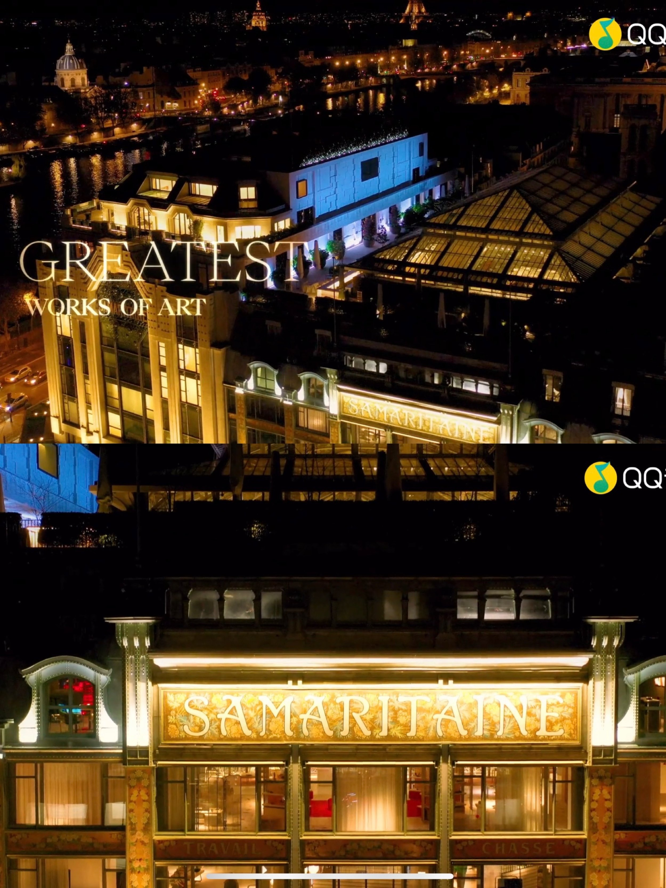
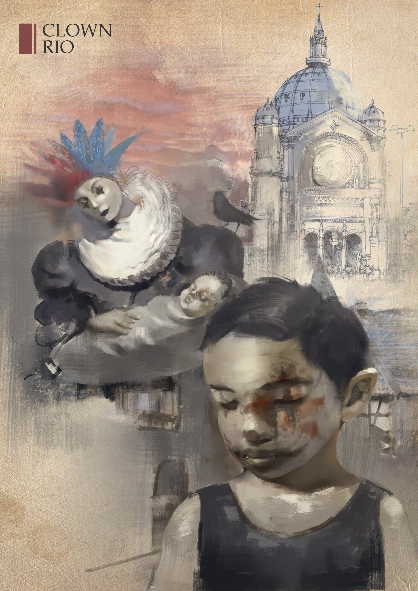

Journal & research
Blog

2022-10-14
One project in my portfolio: Macbeth

2022-07-06
Which artists and works of art Jay paid tribute to in “Greatest Works of Arts”

2021-04-05
The Perceiver of Light

2021-01-09
Navigating The Unknown

2020-12-28
End Of A Century

2020-09-05
How Drama Develops In The Context Of Hybridization
2020-08-13
Reflection on the design process for Miss Julie

2020-06-26
Out of the Maze

2019-07-09
Clown Rio

2016-07-06